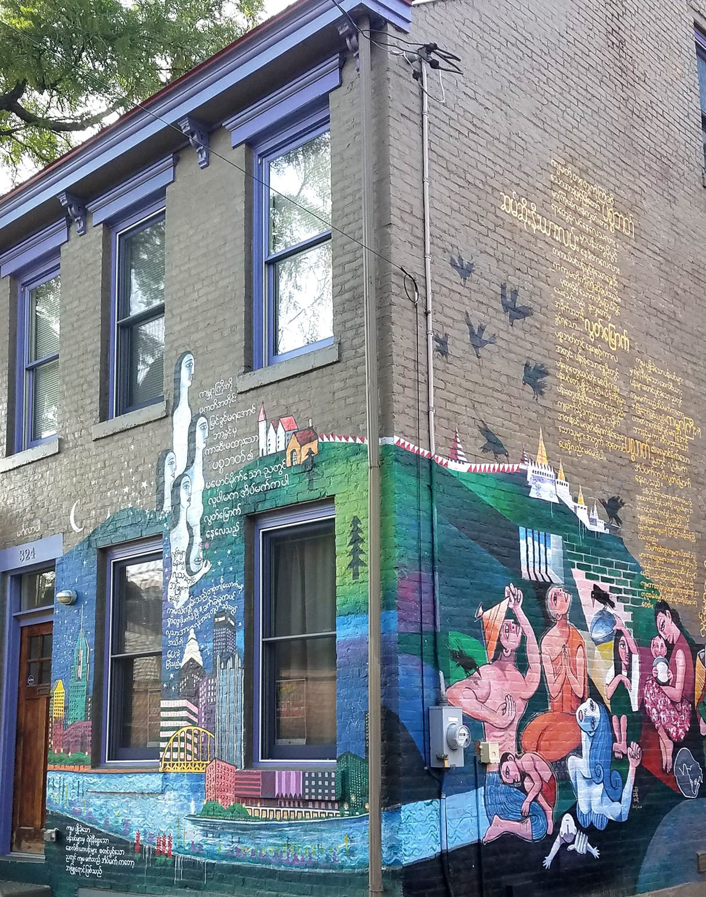
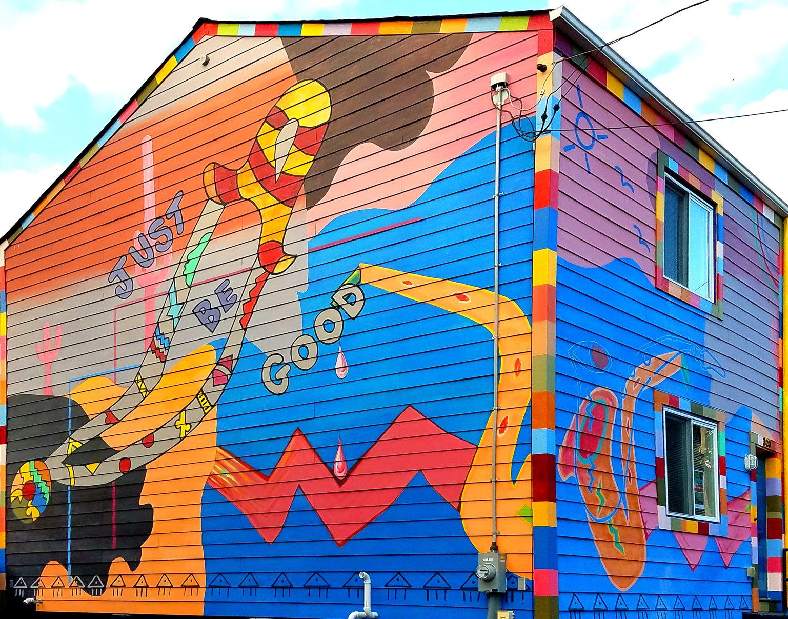

22 Years of Protecting and Celebrating
Freedom of Creative Expression
A 90-second pictorial history.

A Spark in the Audience
Diane Samuels and Henry Reese attend a Salman Rushdie talk at the University of Pittsburgh. He mentions the Cities of Asylum network in Europe, and an idea is born.

First Writer Arrives
City of Asylum officially launches. Poet Huang Xiang paints calligraphies of his poetry on the façade of his Sampsonia Way residency house. His "House Poem" inspires our "house publication" project.

First Jazz Poetry Concert
Huang Xiang collaborates with saxophonist / composer Oliver Lake, who curates and plays in Jazz Poetry for the next 15 years.

A Growing Safe Haven
Winged House—a collaboration between artists Thaddeus Mosley, Laura Jean McLaughlin, Bob Ziller, and Nobel Literature Laureate Wole Soyinka—is created as the residence of our second writer. Sampsonia Way begins its transformation into a literary corridor.

Our First Reading
Horacio Castellanos Moya, the second writer-in-residence, presents his novel Senselessness in the founders' home, the first of 73 programs in their house.

Pittsburgh-Burma House
Text in Burmese by Khet Mar, our third writer-in-residence, and with art by her husband Than Htay Maung.

Jazz House
Created by Oliver Lake and executed by Than Htay Maung. In addition to text and art, it incorporates sound.

Our First Festival
"Exiled Voices of Iran," to prepare Pittsburgh for Iranian author Yaghoub Yadali, our next writer-in-residence. Finale was a concert by The Casualty Process, an Iranian electronica rock band in exile.

Free Arts Programs Increase
"Summer on Sampsonia" is launched in a tent on vacant lots. It quickly becomes a community space that helps us shape our future.

A River of Words
140 neighbors each mount and protect a word on their facades, honoring our protection of writers. A project of writer-in-residence Israel Centeno and Venezuelan artists Carolina Arnal and Gisela Romero.

Alphabet Reading Garden
Landscape architect Joel Le Gall and artists Laura Jean McLaughlin and Diane Samuels help City of Asylum transform the site of a nuisance bar into a park for the community.

International Recognition
City of Asylum Pittsburgh chosen as U.S. headquarters for the 90-city International Cities of Refuge Network.

Alphabet City Opens
City of Asylum opens its permanent home at 40 W. North Avenue — Alphabet City — a cultural hub with a stage, bookstore, and restaurant.

Responding to COVID
City of Asylum creates "The Show Must Go On(line) Pittsburgh," streaming our programming and hosting 21 other Pittsburgh arts organizations. We now livestream all programs.

Comma House
Created by Bangladeshi writer-in-residence Tuhin Das. Installed by Thomas Herman.

Ukrainian Fellowship Begins
In response to Russia's invasion of Ukraine, City of Asylum creates a special fellowship bringing three Ukrainian writers to Pittsburgh.

UNESCO City of Literature
Mayor Ed Gainey selects City of Asylum to lead and organize Pittsburgh's application. U.S. withdrawal from UNESCO renders application moot.

Bridges Creative Summit
City of Asylum hosts writers and leaders of the 90-city International Cities of Refuge Network in Pittsburgh.

Newest Writer Arrives
Arrival of most recent endangered writer, who remains anonymous for their safety.
“City of Asylum Pittsburgh is a model” — Salman Rushdie